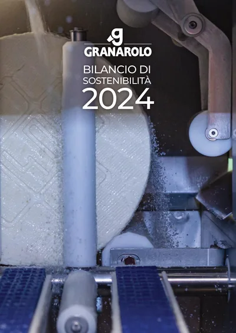
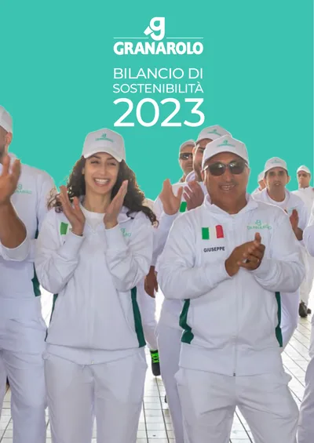
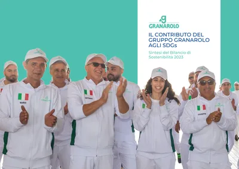
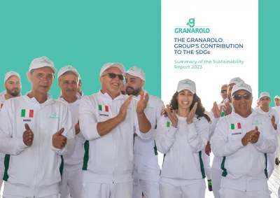
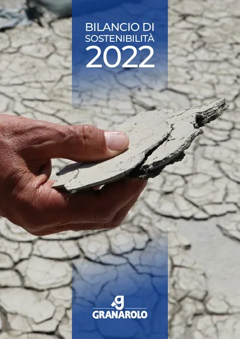
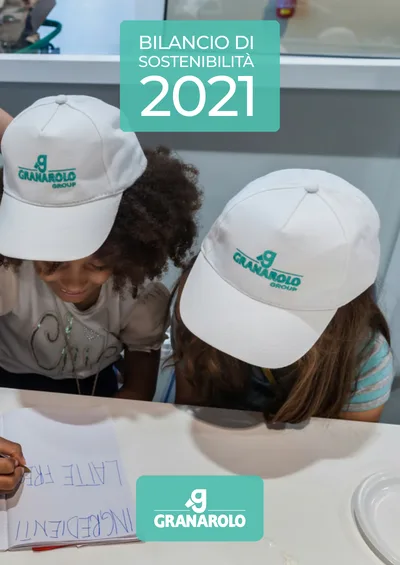
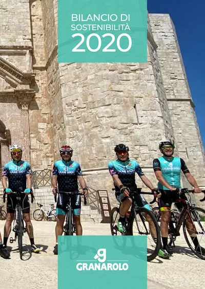
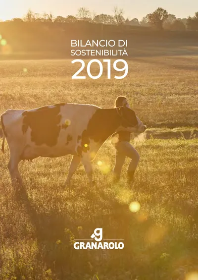
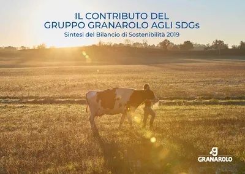

Documento
2024
bilancio di sostenibilità 2024
Dettagli
Gruppo Granarolo · Filiera Granlatte
Granarolo lavora ogni anno quasi 9 milioni di quintali di latte, per il 97% conferito dagli allevatori soci del consorzio Granlatte. Qui raccontiamo cosa significa, in numeri verificabili, e mettiamo a disposizione l'intero archivio dei bilanci di sostenibilità del gruppo, scaricabile liberamente.
Il settore primario
Il settore primario (agricoltura, allevamento, pesca, silvicoltura) è il punto d'origine di ogni filiera agroalimentare, ed è anche il punto in cui gli impatti ambientali e sociali della sostenibilità si decidono per primi: uso del suolo, benessere animale, emissioni legate agli allevamenti, gestione dei reflui.
Il gruppo Granarolo nasce nel 1957 come Consorzio Bolognese Produttori Latte e resta, quasi settant'anni dopo, un modello cooperativo: dietro il marchio Granarolo c'è Granlatte, il consorzio degli allevatori soci che conferisce la materia prima. Nel 2024 il latte dei soci Granlatte ha rappresentato il 97% del totale acquistato dal gruppo: il legame con il settore primario non è un richiamo di facciata, è la struttura stessa dell'azienda.
È anche per questo che gran parte dello sforzo di sostenibilità raccontato nel bilancio 2024 si concentra "a monte": impronta carbonica alla stalla, benessere animale certificato, biometano da reflui zootecnici, prima che negli stabilimenti di trasformazione.
Dal campo al frigorifero
Sei tappe, dal campo al consumatore, e per ciascuna il presidio di sostenibilità che il gruppo adotta: la responsabilità non si concentra in un solo passaggio, ma accompagna tutta la filiera.
Cinque aree, un unico bilancio
Granarolo rendiconta le proprie emissioni secondo il GHG Protocol (Scope 1 e 2) e nel 2024 ha consumato 428.245 MWh di energia, di cui il 10% da fonti rinnovabili. Dal 2018 il gruppo ha adottato un sistema di gestione ambientale certificato ISO 14001 e misura l'impatto di prodotto con certificazioni EPD. I dati completi sono nei grafici Emissioni Scope 1 e Scope 2 e Mix energetico 2024 più avanti in questa pagina.
L'obiettivo dichiarato per il 2030 è ridurre del 30% le emissioni di gas serra per kg di latte prodotto dalla filiera, attraverso tre progetti paralleli: carbon footprint alla stalla, riduzione della plastica, piano anti-spreco (dettagli nella sezione Obiettivi 2030). I risultati raggiunti da questi progetti sono nel grafico CO2 risparmiata dai progetti del Piano 2030.
Tutte le stalle della filiera Granarolo-Granlatte sono certificate Classyfarm e Bonlatte, quest'ultima una certificazione volontaria aggiuntiva rispetto agli standard ministeriali. Un progetto di ricerca con le Università di Brescia, Milano e Bologna ha misurato l'impronta carbonica alla stalla su un campione di aziende rappresentative, ottenendo la certificazione EPD del latte crudo.
Il 97% del latte lavorato nel 2024 proviene dagli allevatori soci di Granlatte: la filiera corta e cooperativa è, insieme, garanzia di tracciabilità e leva di sostenibilità.
Il gruppo contava 2.532 dipendenti nel 2024 (2.490 nel 2023). Nello stesso anno sono state erogate 20.757 ore di formazione, oltre il 30% in più rispetto al 2023 (il dettaglio per genere è nel grafico Ore di formazione per genere, 2024). Gli infortuni sul lavoro sono scesi da 33 a 28 rispetto all'anno precedente, con zero decessi registrati.
Oltre il 54% delle ore di formazione 2024 ha riguardato sicurezza e ambiente, seguito da competenze manageriali e tecnico-specialistiche.
Sul fronte packaging, Granarolo ha convertito le referenze Yomo X2 e X4 al vasetto di carta certificata PEFC, risparmiando nel solo 2024 oltre 367 tonnellate di plastica e 772 tonnellate di CO2 equivalente. È in corso la sperimentazione di R-PET opaco food grade ottenuto dal riciclo delle bottiglie bianche del latte.
Sul fronte anti-spreco, la collaborazione con Too Good To Go ha portato pittogrammi informativi su oltre 48 milioni di confezioni nel 2024, per aiutare i consumatori a valutare la freschezza del prodotto prima di scartarlo.
In vista dell'allineamento a CSRD/ESRS, Granarolo ha condotto per il 2024 la sua prima analisi di doppia materialità: rilevanza dell'impatto (impact materiality) e rilevanza finanziaria (financial materiality), quest'ultima validata anche in un confronto diretto con tre primari istituti di credito.
L'esito, in dieci temi ESRS classificati da E1 a G1, guida le priorità di rendicontazione: è visualizzato nel grafico Matrice di doppia materialità più avanti in questa pagina.
Dati dal bilancio 2024
Cinque grafici, tutti costruiti sui dati pubblicati nel bilancio 2024. Sotto ogni grafico è indicata la fonte puntuale, con il riferimento alla pagina del documento originale da cui il dato proviene.
| Anno | Scope 1 | Scope 2 (location-based) |
|---|---|---|
| 2022 | 42.892 | 79.528 |
| 2023 | 44.602 | 82.413 |
| 2024 | 46.435 | 84.861 |
| Fonte | MWh | Quota |
|---|---|---|
| Fonti fossili | 385.072,4 | 89,9% |
| Fonti rinnovabili | 42.981,7 | 10,0% |
| Fonti nucleari | 190,7 | 0,04% |
| Progetto | Raggiunto | Target successivo |
|---|---|---|
| Riduzione plastica (2018-2024 / target 2025-2026) | 5.600 | 1.000 |
| Piano anti-spreco (2022-2024 / target 2025-2026) | 19.000 | 12.000 |
| Genere | Ore |
|---|---|
| Uomini | 4.550 |
| Donne | 16.207 |
| Tema | Impact materiality | Financial materiality |
|---|---|---|
| G1 — Condotta delle imprese | 3,8 | 3,7 |
| S3 — Comunità interessate | 3,65 | 3,05 |
| E5 — Economia circolare | 3,6 | 3,2 |
| E1 — Cambiamenti climatici | 3,5 | 3,4 |
| S4 — Consumatori e utilizzatori finali | 3,5 | 3,05 |
| S2 — Lavoratori nella catena del valore | 3,45 | 2,8 |
| E3 — Acqua e risorse marine | 3,3 | 3,15 |
| S1 — Forza lavoro propria | 3,3 | 3,0 |
| E4 — Biodiversità ed ecosistemi | 3,15 | 2,6 |
| E2 — Inquinamento | 3,0 | 3,1 |
La rotta dichiarata dal gruppo
Il bilancio 2024 non dichiara un anno base per l'obiettivo generale. Lo riportiamo così come è stato pubblicato, senza aggiungere un riferimento che la fonte non dà.
Ridurre le emissioni di gas a effetto serra del 30% per kg di latte prodotto dalla filiera, entro il 2030.
SDG collegati: 12 (consumo e produzione responsabili), 13 (lotta al cambiamento climatico), 17 (partnership per gli obiettivi).
Target: −30.000 t CO2 eq/anno. Carbon footprint certificata EPD: 1,47 kg CO2 eq/l (latte convenzionale), 1,03 kg CO2 eq/l (latte biologico).
−5.600 t CO2 eq raggiunte nel periodo 2018-2024. Target successivo: −1.000 t CO2 eq nel periodo 2025-2026.
−19.000 t CO2 eq raggiunte nel periodo 2022-2024, riducendo i resi da mercato e piattaforma. Target successivo: −12.000 t CO2 eq nel periodo 2025-2026.
Sei anni di rendicontazione, dal 2019 al 2024
Nove documenti, dal 2019 al 2024, tutti consultabili e scaricabili direttamente da questa pagina, ciascuno con il rimando alla fonte ufficiale da cui proviene (vedi Fonti).
9 documenti disponibili









Trasparenza sui dati
I bilanci di sostenibilità Granarolo dal 2019 al 2023 sono redatti secondo i GRI Standards. Il bilancio 2024 mantiene i GRI Standards e avvia il percorso di allineamento a CSRD (Corporate Sustainability Reporting Directive) ed ESRS (European Sustainability Reporting Standards), introducendo per la prima volta l'analisi di doppia materialità documentata nella sezione I numeri di questa pagina.
Tutti i documenti di questo archivio sono copyright © gruppo Granarolo S.p.A. e vengono riproposti per uso esclusivamente didattico, nell'ambito di un Project Work universitario, con il rimando alla pagina ufficiale accanto a ogni scheda. Le edizioni 2019 e 2021, non più disponibili sul sito Granarolo, sono state recuperate dall'archivio pubblico di Impronta Etica.
L'obiettivo è che questa pagina sia utilizzabile dal maggior numero possibile di persone, con qualsiasi dispositivo: